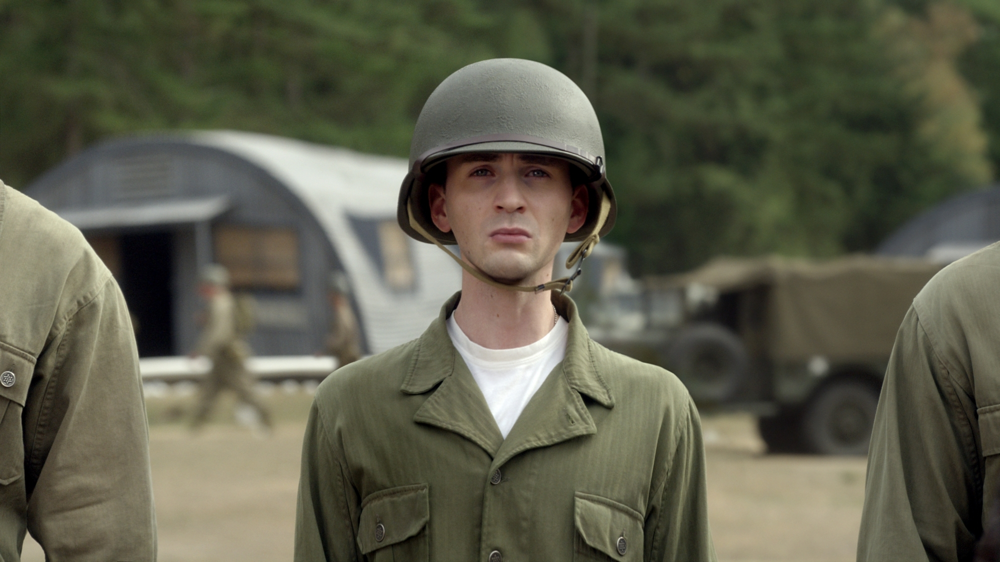

Captain America The Frist Avenger

Envious of his friend Bucky Barnes’ military enlistment, and
undeterred by his own multiple rejections by the U.S. Army, physical
weakling Steve Rogers made one more attempt to join the march of men
to fight for their country in the dark days of World War II. Rogers’
valiant wish to fight bullies wherever they were grabbed the attention
of scientist Dr. Abraham Erskine, and he handpicked the idealistic
young man for the Army’s Super-Soldier program under his supervision.
The First Avenger Story

After truly joining the fight in World War II thanks to his rescue of
captured troops, including his old friend Bucky Barnes, Captain
America quickly earned the respect and admiration. And it was not only
from the soldiers he fought alongside, but also from British secret
agent Peggy Carter, an expert on Hydra, who had served as Erskine’s
assistant on the Super-Soldier program. After a series of battles
overseas, Rogers, Barnes, and the Howling Commandos strike force
staged an assault on a train carrying Hydra personnel, during which
Barnes seemingly fell to his death. Grieving over the loss, Rogers
nevertheless continued his campaign against Hydra, while also growing
closer to Peggy...
Know More....